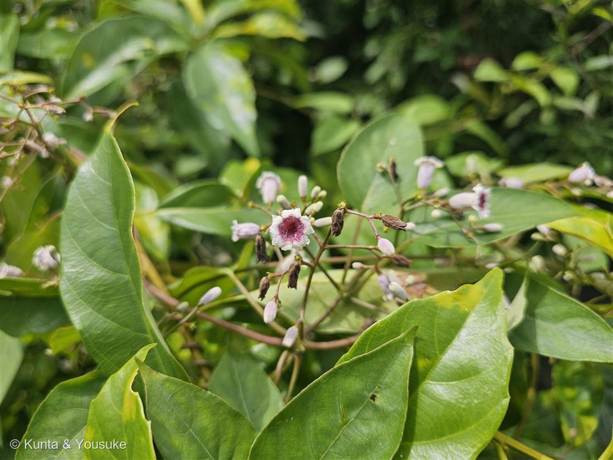

地図を読み込んでいるよ…
🔍 写真も地図も、押しているあいだ拡大して見られるよ（スマホは指を置いてすこし待ってね）。
🌍 の地図＝この子がもともと自生している場所を緑に。日本・東アジア〜東南アジア。
⚠ 地図は国（日本と中国だけ県・省）までしか塗れないから、ほんとうの分布より広く見えていることがあるよ。地図はだいたいの場所。正確なところは、上の文を見てね。
ヘクソカズラ
Paederia foetida L.
別名 · ヤイトバナ（灸花）／サオトメバナ（早乙女花）
アカネ科 · Rubiaceae（ヘクソカズラ属）
名前の由来
- Paederia（パエデリア）＝ギリシャ語で「悪臭」。foetida（フォエティダ）＝ラテン語で「悪臭のある」。属名も種小名も“くさい”。
- 和名ヘクソカズラ（屁糞葛）＝茎葉を揉むと臭うことから。……和名・属名・種小名の三重で「くさい」と言われる、ちょっと気の毒な子。
- でも別名はかわいい：ヤイトバナ（灸花）＝花の中心の赤がお灸（やいと）の跡に見えるから。サオトメバナ（早乙女花）＝可憐な姿から。
この植物のこと
- アカネ科ヘクソカズラ属のつる性の多年草。日本各地の道ばた・生垣・やぶに、ほかの植物にからんで育つ。夏、白い筒状の小花に、中心の赤紫という配色の花を咲かせる。
- 茎葉を傷つけると独特の匂い（メチルメルカプタン系）を出す＝食べられないための防御。名前の“くさい”の正体はこれ。
- 秋には光沢のある黄褐色の丸い実をつけ、しもやけの薬などに使われた歴史もある。
- すぐ前の No.025 ドクダミ と、ちょうど対になる子：ドクダミは「臭いけど匂いこそ薬」、ヘクソカズラは「名前は散々でも花は可憐」。名前や匂いで決めつけないで、ちゃんと見る——このテーマの、いい締めくくり。